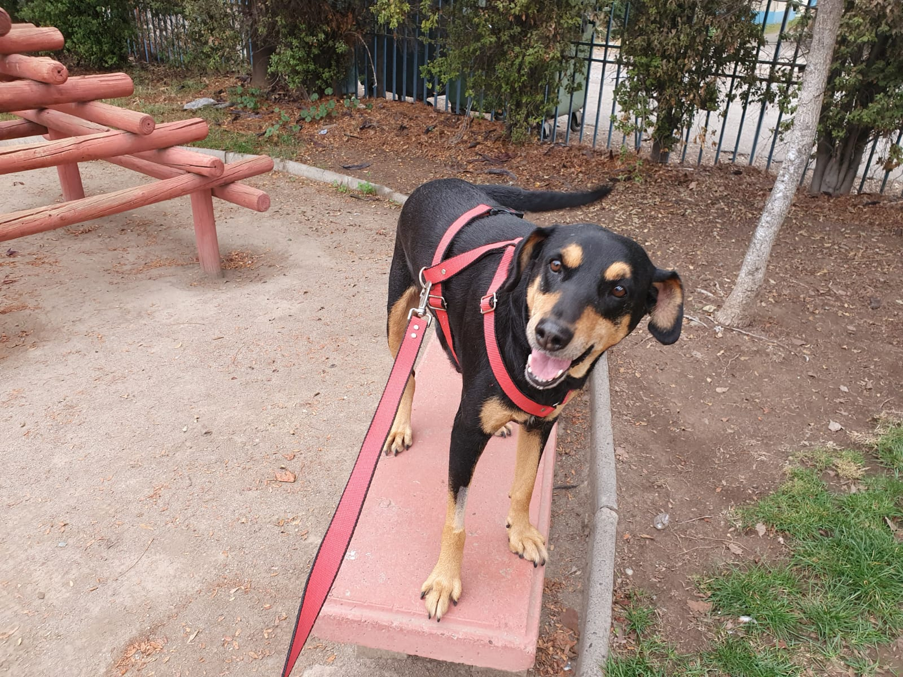
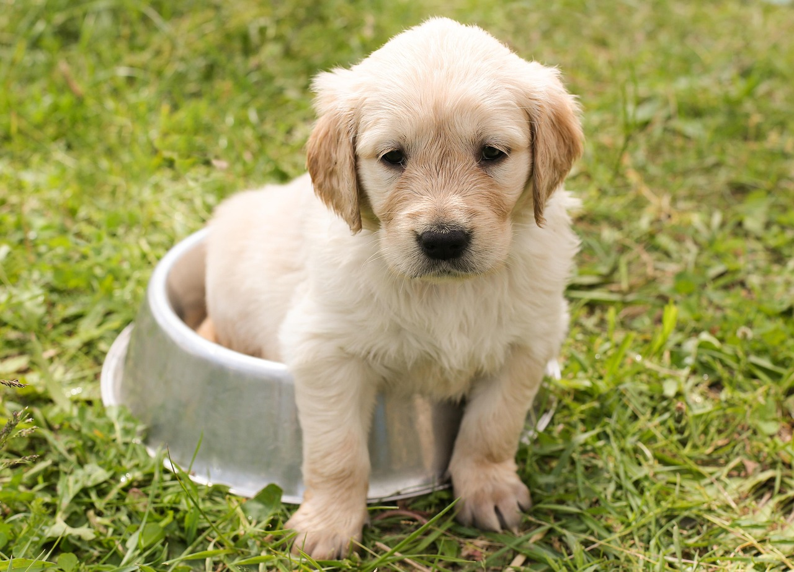

Sobre nosotros


Nuestra familia desde hace más de 10 años ha realizado de forma particular la labor rescates y adopción de perritos y gatitos que viven en la calle. Durante este tiempo hemos alimentado y dado una segunda oportunidad a aquellos más vulnerables. Hemos rescatado y dado en adopción a muchas mascotas en situación de calle. Fundación Patitas nace por la vida y muerte de nuestra mascota Pepa quien nos acompañó por más de 10 años. Lamentablemente Pepa comenzó a tener tumores y sufrir de cáncer durante su vida por lo cual fue tratada oncológicamente y extirpando los tumores, intentando y probando con todas las terapias y tratamientos disponibles. Pepa vivió por más de 10 años en nuestro hogar, pero en el año 2020 tristemente la enfermedad fue más fuerte y se convirtió en un Angel, una estrella que nos cuida desde el cielo. Somos una Fundación de ayuda a los animales con 2 años de servicio como fundación en el sector de Bajos de Mena, Puente Alto. Hemos logrado consagrar un proyecto basado en la preocupación y el cuidado de los animales que lo requieran, ya sea por el abandono o despreocupación de sus dueños, o porque simplemente han nacido en la calle. Apoyamos y difundimos casos de animales que lo necesitan y de otras fundaciones como “Vida de Gatos”. Hacemos difusión en las redes sociales frente a casos de maltrato, atropello, envenenamientos, abandono, enfermedades, esterilizaciones o castraciones a través de las redes sociales para llegar a las personas cercanas que puedan prestar ayuda. Contamos con la participación activa de la comunidad y apoyo entre fundaciones, frente a la enorme necesidad de ayuda. Igualmente contamos con veterinarios que nos apoyan con precios preferenciales para la ayuda a los animalitos que necesiten atención médica, pero los recursos económicos también resultan escasos. Participamos en jornadas de castración, de adopción, de médicos veterinarios. Hemos recibido mucha ayuda y aporte de la fundación “Vida de Gatos”, a quienes les damos un agradecimiento por apoyarnos para poder continuar con nuestra misión. Apoyamos a la fundaciones con aportes y difundiendo casos en las redes sociales. Para poder continuar con esta hermosa obra de protección a quienes más lo necesitan, necesitamos del apoyo de todos quienes deseen colaborar en la donación de alimentos para mascotas y otras necesidades de recursos para seguir ayudándolos, pues no tienen forma alguna de satisfacer sus necesidades. Deseamos que su destino cambie y no permanezcan para siempre relegados al olvido, el abandono o simplemente al sufrimiento permanente en las calles y al maltrato.